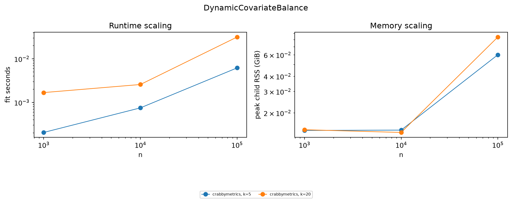

Fresh v0.9.0 timings for the 30-estimator benchmark inventory
This ablation reruns the 30-estimator benchmark inventory against v0.9.0, using adapter revision 2. The bounded grid is \(n \in
\{10^3,10^4,10^5\}\) and \(k \in \{5,20\}\). It does not include the newly added MPE_CBPS, which has its own executed API example and Chronos simulation.
The September 9 measurements replace the obsolete August charts. They include the corrected unpenalized GLM, centered ElasticNet, same-panel horizontal ridge, same-sample 2SLS, and R fit-only timing adapters. This is a smaller reproducible profiling grid, not a rerun of the old \(10^7\)-row sweep.
Each cell runs in a fresh subprocess with single-threaded numerical kernels. The driver rejects predicted over-cap allocations, watches aggregate descendant RSS, enforces a wall timeout, and stops attempting larger samples after the first hard failure for an estimator/implementation/dimension path. Thus a missing point is an observed feasibility boundary, not an accidental omission.
The status table includes every requested cell. Timeouts and pruned larger cells are retained as feasibility outcomes; successful timings alone do not describe the whole grid.
This run is the Cartesian product of three sample sizes and two dimensions. A fresh seeded generator builds the complete input outside the fit timer. The reported fit_seconds starts immediately before the estimator call and stops on return; imports and data generation are excluded. In contrast, peak_rss_bytes covers the complete child process, including imported libraries, generated inputs, copies made by foreign-function boundaries, solver workspaces, and descendants such as R subprocesses.
The preflight starts from the raw \(8nk\) bytes for a float64 design (or the family-specific panel/dynamic analogue), multiplies it by a conservative estimator-family workspace factor, and adds 192 MiB. The run-time monitor then enforces the requested 2 GiB cap or available RAM after a 4 GiB system reserve, whichever is smaller. The effective cap is printed above. Every child and descendant is subject to a 10-second wall clock. A preflight rejection, RSS kill, timeout, or execution error stops larger n values only for that estimator, implementation, and k path.
Dimension conventions
Tabular, GLM, IV, survival, moment, balancing, and semiparametric estimators: n rows and k covariates/instruments.
Synthetic control: n pre-treatment periods and k donor series.
Other panel estimators: n periods and k units; this is a matrix stress dimension, not an ordinary covariate count.
Dynamic estimators: approximately n/4 units, four decision periods, and k history covariates.
Randomness and comparability
All cells use seed 1729 and single-threaded BLAS/OpenMP/Rcpp settings. Each cell is measured once; sub-millisecond ratios are especially sensitive to noise. Native and external adapters reconstruct the same DGP and shape. The experiment measures systems scaling, not statistical accuracy. Only references with a defensible generic-grid adapter enter timing comparisons; related-but-different estimators remain linked as provenance and are explicitly described below.
Matched reference ratios
The table below uses only cells where both Crabbymetrics and the external implementation completed. reference / native > 1 means the Crabbymetrics fit was faster; values below one mean the external fit was faster. Medians summarize heterogeneous \((n,k)\) cells and should be read as a profiling signal, not a single universal speed factor.
Each subsection gives the exact DGP, fitted tuning values, reference status, completion frontier, median log-log runtime slope, and two scaling plots. A log-log slope near one indicates approximately linear empirical scaling along a fixed-k path; it is descriptive and can mix solver regimes over this short grid.
ABCOLS
Family and dimensions.tabular; k means continuous covariates (plus two categorical variables).
Data-generating process. Gaussian linear outcome with n rows and k standard-normal continuous covariates; two deterministic categorical variables cycle through 8 and 5 levels.
Fitted specification. ABCOLS with centered continuous covariates and categorical main effects; the scaling run does not add continuous-by-category or category-by-category interactions.
Reference interpretation. No exact public implementation was found. R wec is retained as weighted-effect-coding provenance, not timed as an equivalent estimator.
Family and dimensions.tabular; k means covariates.
Data-generating process. Gaussian linear outcome y = X beta + epsilon with X of shape n by k, beta_j increasing from 0.2 to 1 and normalized by sqrt(k), and unit-variance noise.
Fitted specification. Unpenalized Crabbymetrics OLS versus scikit-learn LinearRegression, both with their normal intercept conventions.
Reference interpretation. Shape- and estimand-matched timing comparison.
Family and dimensions.fixed-effects; k means covariates.
Data-generating process. The Gaussian linear design plus one fixed-effect identifier cycling over min(1000, n/20) groups.
Fitted specification. Crabbymetrics within-transformed FixedEffectsOLS versus PyFixest feols and R fixest feols with iid covariance work requested.
Reference interpretation. Same outcome, covariates, and one-way fixed-effect partition; implementation overhead and covariance defaults can still differ.
Family and dimensions.polynomial; k means raw covariates.
Data-generating process. The Gaussian linear design is deliberately used even though the fitted basis is quadratic, isolating feature-expansion and bagging costs from a changing signal model.
Fitted specification. Ten degree-2 ridge learners, at most 12 raw features per learner and at most 100,000 sampled rows, compared with a scikit-learn PolynomialFeatures/StandardScaler/Ridge BaggingRegressor pipeline.
Reference interpretation. Matched computational pipeline, but bootstrap draws and standardization details are implementation-specific.
Family and dimensions.survival; k means covariates.
Data-generating process. Survival time is exponential with scale exp(-clip(X beta, -1, 1)); censoring/event indicator is Bernoulli(0.8).
Fitted specification. Crabbymetrics ExponentialPH with k covariates.
Reference interpretation. R flexsurv is documented but not timed because its generic regression parameterization is not a clean drop-in PH comparator here.
Family and dimensions.iv; k means exogenous covariates and excluded instruments.
Data-generating process. k exogenous controls X and k excluded instruments Z; one endogenous regressor d = 0.7 Z_1 plus noise; y = d + X beta plus noise.
Fitted specification. Crabbymetrics TwoSLS versus PyFixest’s IV formula with the same k controls and k excluded instruments.
Reference interpretation. Matched linear IV dimensions and estimand; formula construction and covariance bookkeeping differ.
Data-generating process. Low-rank panel with n periods and k units; control outcomes load on two common factors and treated outcomes are noisy convex combinations of controls, treated in the final third.
Fitted specification. Crabbymetrics HorizontalPanelRidge with unit penalty versus the corresponding scikit-learn Ridge donor-regression building block.
Reference interpretation. The scikit-learn row is a matched donor-regression kernel, not the complete cohort orchestration.
Family and dimensions.synthetic-control; k means donor units.
Data-generating process. n pre-treatment periods by k independent Gaussian donor series; the treated series is the equal-weight donor average plus small noise.
Fitted specification. Crabbymetrics SyntheticControl with at most 300 simplex iterations.
Reference interpretation. R Synth is the canonical reference but its data-preparation/optimization interface is not timed on the generic grid.
Family and dimensions.panel; k means units; n is periods.
Data-generating process. Low-rank n-period by k-unit panel; treated units are convex mixtures of controls and treatment starts after two thirds of periods.
Fitted specification. SyntheticDID with unit and time penalties fixed at 0.01 and at most 3,000 simplex iterations.
Reference interpretation. R synthdid is the exact external family but is retained as provenance because the package was unavailable in the benchmark environment.
Family and dimensions.panel; k means units; n is periods.
Data-generating process. The same low-rank staggered panel used for SyntheticDID, with no supplied outcome surface so runtime covers raw double balancing.
Fitted specification. Double AugmentedBalancing with unit and time penalties 0.01 and at most 3,000 iterations.
Reference interpretation. R augsynth and the repository’s independent quadprog parity fixture are references; neither is substituted for the exact Crabbymetrics configuration in timing plots.
Family and dimensions.panel; k means units; n is periods.
Data-generating process. The low-rank treated panel with n periods and k units.
Fitted specification. MatrixCompletion with at most 50 outer iterations and SVD rank min(6, k-1), retaining unit and time effects.
Reference interpretation. R fect method=mc is the canonical family reference, but its full long-panel interface is not treated as a generic-grid drop-in.
Family and dimensions.moments; k means parameters/covariates.
Data-generating process. Gaussian linear outcome with an explicit intercept-augmented n by (k+1) design.
Fitted specification. Generic MEstimator receives a least-squares objective/analytic gradient callback and observation-level score callback, starting at zero for at most 30 iterations.
Reference interpretation. R geex is the callback-framework reference; arbitrary user callbacks prevent a single universal external timing adapter.
Family and dimensions.moments; k means parameters/instruments.
Data-generating process. Exactly identified linear moments X_i(y_i - X_i’ theta) on the intercept-augmented Gaussian linear design.
Fitted specification. Identity-weighted GMM with analytic Jacobian, zero initialization, and at most 30 iterations.
Reference interpretation. R gmm and statsmodels are framework references; their generic callback and covariance work is not forced into a misleading one-size timing row.
Family and dimensions.semiparametric; k means controls.
Data-generating process. Continuous treatment d = 0.25 X beta plus noise and outcome y = 0.8 d + X beta plus noise.
Fitted specification. Crabbymetrics EPLM with its default finite-difference epsilon.
Reference interpretation. DoubleML PLR is related but uses different orthogonalization/cross-fitting, so it is provenance rather than an EPLM speed comparator.
Family and dimensions.semiparametric; k means controls.
Data-generating process. Binary treatment obtained by median-splitting 0.25 X beta plus noise; y = 0.8 d + X beta plus noise.
Fitted specification. Crabbymetrics AIPW with ridge penalty 0.1, two folds, and propensity clipping 0.02 versus DoubleML IRM with ridge/logit nuisances and the same clipping threshold.
Reference interpretation. Matched ATE/AIPW family; fold construction and nuisance-standardization details differ.
Family and dimensions.dynamic; k means history covariates.
Data-generating process. Approximately n/4 units over four decision periods, k Gaussian history variables per period, logistic treatment driven by the first history coordinate, and a random-walk outcome with additive 0.5 treatment effects.
Fitted specification. DynamicCovariateBalance targets the all-zero four-period path with at most 100 iterations.
Reference interpretation. No exact public Viviano-Bradic implementation was found; the estimator is native-only in the timing grid.
Reference code. native-only-no-public-exact-match
implementation
completed cells
timeouts
RSS kills
preflight skips
largest completed n
largest completed k
median fit seconds
maximum observed RSS (GiB)
median log-log runtime slope
k paths with slope
0
crabbymetrics
6
0
0
0
100000
20
0.002132
0.084106
0.688545
2

ParallelTrendsSNMM
Family and dimensions.dynamic; k means history covariates.
Data-generating process. The four-period dynamic-treatment design with a five-column outcome path including baseline.
Fitted specification. ParallelTrendsSNMM with maximum horizon 1, blip treatment mode, two nuisance folds, and fixed seed 1729.
Reference interpretation. gesttools is a nearby SNMM reference but not a parallel-trends SNMM, so it is not timed as equivalent.
The grid is a systems benchmark, not an accuracy horse race. Fit-only timing is reported; synthetic-data construction happens before the model call but remains inside the child process and therefore contributes to the memory guard. Reference rows test the same shapes and model family, but small differences in defaults, parameterization, convergence criteria, and inference work remain. “Nearest” references in the inventory are literature/code pointers only and never enter the timing plots.
On this host, 26 of 30 native estimators completed at least one \(n=10^6\) cell. The native sample-size frontiers were \(n=10^3\) for synthetic DID and augmented balancing, \(n=10^4\) for Cox PH and Andersen–Gill, and \(n=10^6\) for the other 26 estimators. These maxima collapse across \(k\) and therefore describe reach, not a claim that every dimension completed at that sample size.